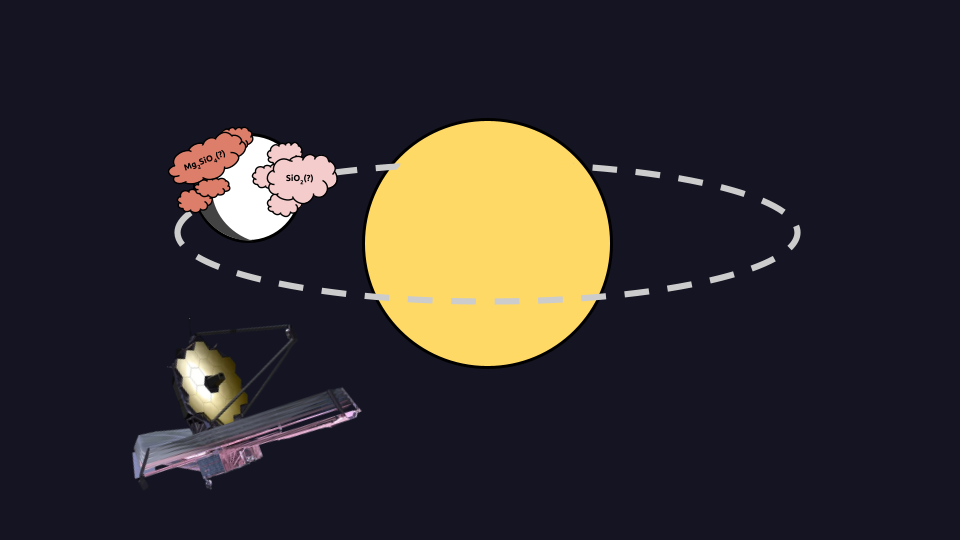
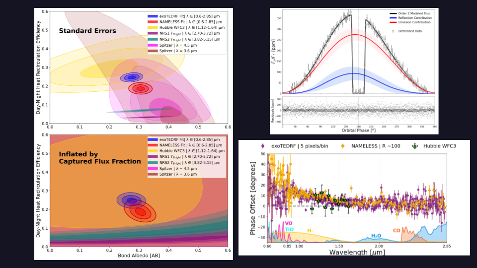
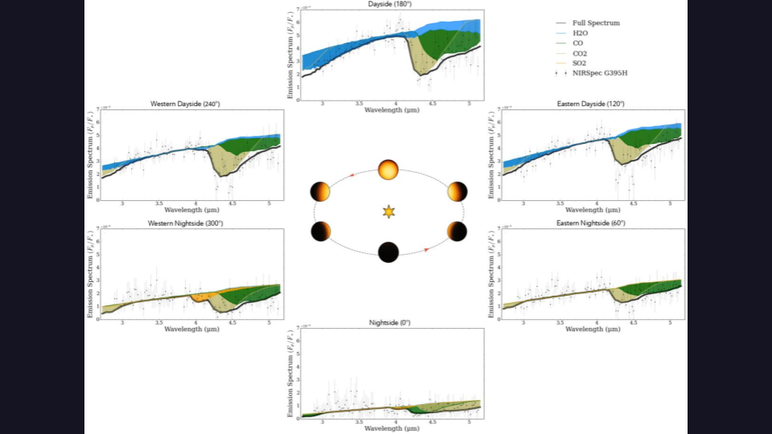
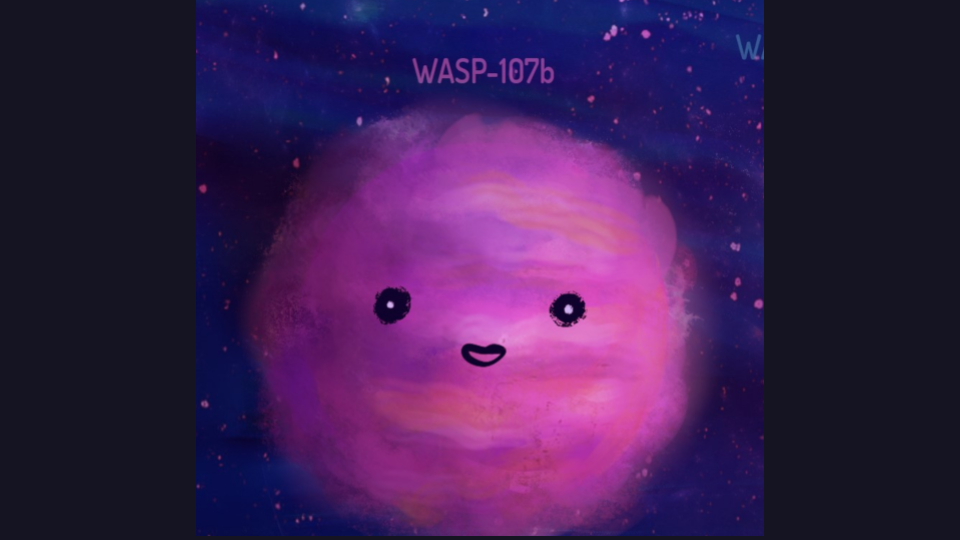
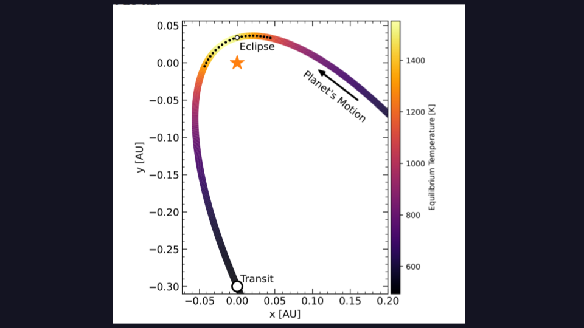
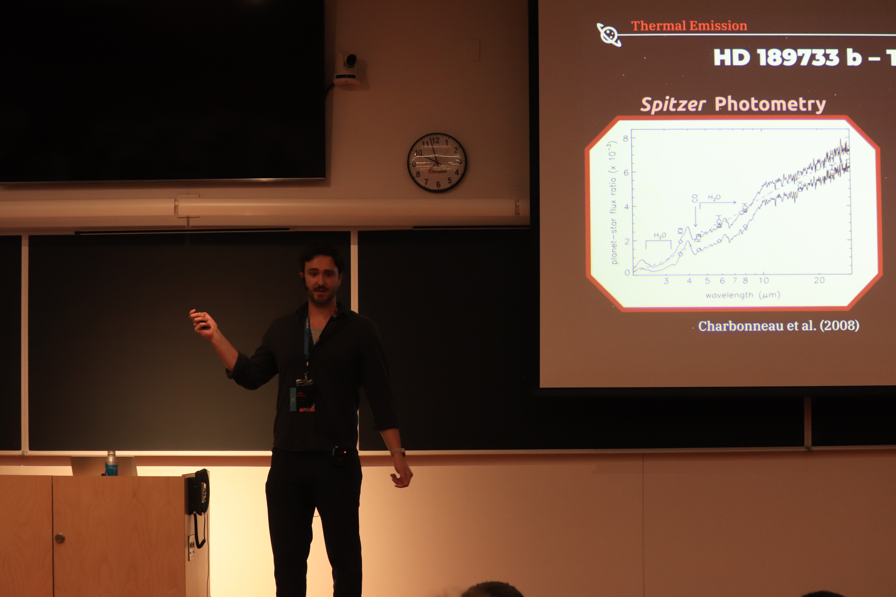

PI of JWST Cycle 5 MIRI Phase Curve
Recently, I was fortunate to be awarded time as Principal Investigator for a JWST GO Cycle 5 program.
We were awarded 69.6 hours to obtain a MIRI/LRS phase curve of the quintessential hot Jupiter HD 189733b in order to globally constrain silicate clouds from its day to its nightside. Stay tuned!

Energy Budget of WASP-121b with a NIRISS/SOSS Phase Curve
In 2025, we published a paper on the energy budget of WASP-121b using a JWST NIRISS/SOSS phase curve.
In this work, we precisely constrain the day-night heat recirculation and Bond albedo of this ultra-hot Jupiter.
For the first time, we also measured the Bond albedo and the geometric albedo of a hot Jupiter using the same
instrument still finding a discrepancy sharpening the albedo paradox.
Figures from Splinter et al. (2025)

LTT 9779b NIRSpec/G395H Phase Curve
Recently, we published a paper on the LTT 977b JWST/NIRSpec phase curve to The Astronomical Journal.
I helped co-supervise an undergraduate student (2nd author) on modeling the energy budget of this
planet and I also contributed an independent data reduction. Figure from Ashtari et al. (2026)

WASP-107b NIRISS/SOSS Transit
I was 4th author on this published paper to Nature Astronomy where we modeled the helium triplet with JWST NIRISS/SOSS.
This allowed our team to model the atmospheric escape on this puffy planet detecting leading and trailing tails.
I helped contribute an independent spectral retrieval analysis. Figure Credit: Daria Kiselava/ McGill Tribune

Changing Chemistry in a high-eccentricity planet with JWST NIRSpec
I was third author on this published paper to The Astronomical Journal where we obtained JWST NIRSpec/G395H partial
phase curve of the high-eccentricity (e = 0.93) planet HD 80606b. I helped contribute an indpendent spectral retrieval analysis confirming the changing chemistry as the planet heats up near its star.
Figure from Sikora et al. (2025)

ExoSLAM II Mini-Lecture
I was a lecturer during the ExoSLAM Summer School series geared toward early-career exoplanet researchers. My lecture was on emission spectroscopy and reflected light in exoplanets. I also helped organize this summer school and assisted with other tutorials!